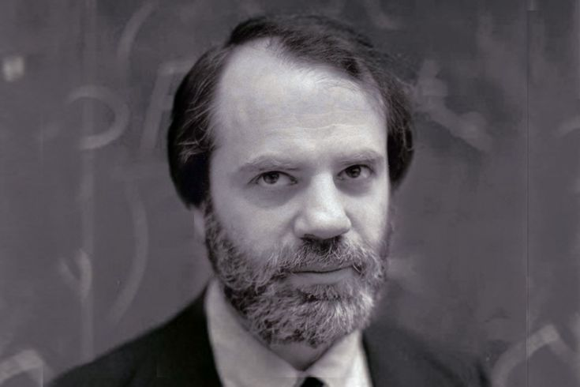

Philosophy of Language examines the nature of meaning, reference,
truth, interpretation, communication, and the relationship between
language, thought, and reality. It asks how words and sentences
acquire meaning, how speakers communicate more than they literally
say, how names refer to objects.
What Is Philosophy of Language?
Philosophy of Language is the branch of philosophy that investigates the
nature, structure, meaning, reference, truth, and use of language. It
asks how words and sentences acquire meaning, how linguistic expressions
refer to objects and events, how statements can be true or false, and
how speakers use language to communicate thoughts and intentions.
Because language is central to reasoning, knowledge, interpretation, and
social interaction, philosophy of language examines not only linguistic
expressions themselves but also the relationship between language,
thought, reality, and human practices.
The basic questions of philosophy of language arise from ordinary acts
of speaking and understanding. What does a word mean? What makes a
sentence true? How does a name refer to a particular person or object?
How can two expressions refer to the same thing while presenting it
differently? How can speakers communicate more than they literally say?
These questions lead philosophers to distinguish between meaning,
reference, truth, assertion, implication, context, and speaker
intention. What appears to be simple communication can therefore involve
complex relationships between language and the world.
What is linguistic meaning, and how do words and sentences acquire
meaning?
How do names, descriptions, and other expressions refer to things?
What makes a statement true or false?
Is meaning determined by mental ideas, linguistic rules, social
practices, or patterns of use?
What is the difference between what a sentence literally says and what
a speaker intends to communicate?
How does context affect the meaning and interpretation of an
utterance?
What is the relationship between language, thought, and reality?
A central distinction is between semantics and
pragmatics. Semantics studies aspects of meaning
associated with linguistic expressions, including the meanings of words,
sentences, and their truth conditions. Pragmatics examines how meaning
is shaped by context, speakers, conversational circumstances, shared
assumptions, and communicative purposes. A sentence can therefore have a
relatively stable linguistic meaning while conveying different practical
implications in different situations. The distinction helps explain why
understanding language requires attention both to what expressions mean
and to how speakers use them.
Everyday communication also demonstrates the difference between
sentence meaning and speaker meaning. If someone asks,
“Can you open the window?”, the grammatical form is a question about
ability, but in an ordinary context the utterance can function as a
request. Similarly, saying “It is cold in here” may communicate more
than a description of temperature if the surrounding context suggests
that the speaker wants a window closed or a heater turned on.
Philosophers therefore investigate how literal meaning, conversational
implication, intention, and context interact in successful
communication.
Semantics: investigates linguistic meaning and the
contribution of expressions to the meaning and truth of sentences.
Pragmatics: examines meaning in context, including
implication, conversational expectations, and communicative intention.
Reference: asks how linguistic expressions relate to
objects, people, properties, and states of affairs.
Truth: examines what makes propositions or sentences
true and how language represents reality.
Speech acts: investigates what people do through
language, such as asserting, promising, requesting, questioning,
warning, or commanding.
Interpretation: examines how linguistic expressions
are understood by speakers, hearers, and interpreters.
Modern philosophy of language was profoundly shaped by thinkers such as
Gottlob Frege, Bertrand Russell, and Ludwig Wittgenstein. Frege's
distinction between sense and reference showed that two
expressions might refer to the same object while presenting that object
in different ways. Russell developed influential analyses of
descriptions and their logical structure. Wittgenstein's early
philosophy emphasized the logical relationship between language and the
world, while his later philosophy increasingly examined meaning through
use, language-games, rules, and forms of life. Together with
developments in logic, these approaches helped make language a central
concern of twentieth-century analytic philosophy.
The philosophy of language also investigates
names, descriptions, indexicals, demonstratives, and
reference. A name such as a person's name appears to refer directly to an
individual, while a description can identify something through
properties or conditions. Expressions such as “I,” “here,” “now,” and
“this” depend heavily on the circumstances in which they are used. These
cases raise questions about how reference is established, whether
reference depends on descriptions or causal and social connections, and
how linguistic expressions remain meaningful across different contexts.
Another major area concerns
truth, propositions, and the relation between language and
reality. Philosophers have developed different theories of truth and different
accounts of how language represents states of affairs. Some approaches
emphasize correspondence between propositions and reality, while others
investigate truth through logical, semantic, pragmatic, or deflationary
frameworks. Questions about truth also connect philosophy of language
with logic and epistemology, because determining whether a statement is
true involves questions about evidence, justification, inference, and
the conditions under which a proposition can be asserted or known.
Philosophy of language further examines
speech acts and communication. J. L. Austin and later
John Searle showed how language can function as a form of action: people
do not merely describe the world when they speak, but can also promise,
command, apologize, declare, question, warn, and request. H. P. Grice
developed an influential account of conversational implicature,
explaining how speakers can convey information that is not explicitly
contained in the literal meaning of their words. These theories
demonstrate that linguistic communication depends upon social
conventions, shared expectations, rational cooperation, and practical
intentions.
Contemporary philosophy of language extends into problems involving
vagueness, ambiguity, metaphor, modality, social meaning, and
language and thought. Philosophers ask how vague expressions such as “tall” or “bald” can
be meaningful despite lacking precise boundaries, how metaphors
communicate information beyond literal description, and how linguistic
categories influence thought and social interaction. These questions
increasingly intersect with philosophy of mind, cognitive science,
linguistics, artificial intelligence, and theories of interpretation.
Language is consequently studied not as an isolated symbolic system but
as part of broader cognitive and social practices.
At its deepest level, Philosophy of Language asks how human beings use
symbolic expressions to think, communicate, interpret, and represent the
world. Its problems connect directly with metaphysics because language
appears to refer to things that exist; with epistemology because
language expresses claims that can be justified or challenged; with
logic because linguistic arguments can be analyzed for validity; and
with philosophy of mind because beliefs, intentions, and thoughts are
often expressed through language. Understanding language therefore
becomes a way of investigating fundamental philosophical questions about
meaning, truth, thought, communication, and reality itself.
Core Questions in Philosophy of Language
One of the most fundamental questions is:
What is meaning? A word such as “tree” does not appear
to possess its meaning simply because of its physical shape or sound.
Its meaning depends on linguistic conventions, patterns of use,
relations to other expressions, and the practices of speakers.
Philosophers have therefore proposed very different accounts of meaning.
Some emphasize mental representations, some emphasize truth conditions,
some emphasize reference, some emphasize the intentions of speakers, and
others emphasize the role that expressions play within broader
linguistic practices.
Another central question concerns reference. How does a
name such as “Aristotle” succeed in referring to a particular historical
person? How does a demonstrative such as “this” refer to something in a
particular context? What allows a description such as “the author of
Hamlet” to pick out an individual? These questions become especially
difficult when an expression appears meaningful even though its referent
is absent, fictional, disputed, or unknown. Theories of reference
attempt to explain how linguistic expressions connect with objects,
properties, events, and states of affairs.
Philosophers also ask how language relates to truth. A
sentence can be meaningful without being true, but what makes it true
when it is true? A statement such as “Snow is white” appears to be true
because of how the sentence relates to the world, but explaining that
relationship raises questions about propositions, facts, correspondence,
interpretation, and linguistic conventions. Formal theories of truth,
including the influential work associated with Alfred Tarski, have
played an important role in the development of modern semantics and
logical analysis.
A further question concerns communication. Speakers
frequently communicate more than the literal meanings of their words. A
person who says “Some students passed” may conversationally suggest that
not all students passed, even though the sentence itself does not
logically state this. A speaker may also use irony, metaphor, indirect
requests, understatement, or culturally shared assumptions. These
phenomena led philosophers such as H. P. Grice to develop influential
theories of implicature and conversational communication.
Finally, philosophers ask whether language merely describes reality or
whether it can also
perform actions and shape social reality. Saying “I
apologize,” “I promise,” or “I declare this meeting open” can itself
constitute an action when the appropriate circumstances are present.
Speech-act theory, associated particularly with J. L. Austin and John
Searle, therefore examines how utterances can function as actions rather
than merely as descriptions of facts.
:contentReference[oaicite:1]{index=1}
Theories of Meaning
The question of meaning lies at the heart of philosophy of language. A
linguistic expression can have meaning in several related senses: it can
refer to an object, express a concept, contribute to the truth
conditions of a sentence, communicate an intention, or have a
conventional role within a linguistic community. Philosophers therefore
disagree about whether meaning should primarily be explained through
reference, mental representation, truth conditions, use, communication,
or some combination of these approaches.
Gottlob Frege's distinction between
sense and reference became one of the foundational
ideas of modern philosophy of language. According to Frege, an
expression can have a reference—the object or entity it stands for—while
also having a sense, roughly understood as a particular mode of
presentation through which that reference is given. This distinction
helps explain why two expressions can refer to the same object while
differing in cognitive significance. Frege developed the distinction
partly to address puzzles concerning identity statements and
substitution in contexts involving belief and other propositional
attitudes. :contentReference[oaicite:2]{index=2}
Other philosophers have emphasized the role of use. In
his later philosophy, Ludwig Wittgenstein challenged the idea that every
meaningful expression must possess one underlying object or mental
representation that constitutes its meaning. Instead, he investigated
the diverse activities in which words are used. His concept of
language-games emphasizes that speaking is part of an activity or form
of life, and that words can perform many different functions. Meaning,
on this approach, cannot always be separated from the practical
circumstances in which linguistic expressions are employed.
:contentReference[oaicite:3]{index=3}
H. P. Grice offered another influential approach by distinguishing
between what an expression conventionally means and what a particular
speaker means on a particular occasion. His theory of speaker meaning
places considerable importance on communicative intentions, while his
theory of conversational implicature explains how hearers can infer
information that has not been explicitly stated. This distinction
between what is said and what is communicated has become central to
modern discussions of pragmatics. :contentReference[oaicite:4]{index=4}
Semantics and Pragmatics
Semantics studies meaning as it is determined by
linguistic expressions and their systematic combinations, while
pragmatics investigates how context, speakers, hearers,
intentions, and circumstances contribute to interpretation. The
distinction is useful but not absolute. Many philosophical debates
concern precisely where semantic meaning ends and pragmatic contribution
begins. A sentence may have a relatively stable linguistic meaning while
its interpretation in a particular situation depends heavily upon
contextual information.
Consider the sentence, “It is raining.” Its linguistic structure is
relatively simple, but its practical significance depends upon the
circumstances in which it is uttered. If someone says it while
discussing a planned picnic, the statement may function as an
explanation for cancelling the event. If someone says it while standing
indoors, it may simply provide information about the weather. The
semantic content and the communicative role are related but need not be
identical.
Pragmatics becomes especially important in cases involving
indexicals and context-sensitive expressions. Words
such as “I,” “here,” “now,” “this,” and “that” cannot be fully
interpreted without knowing relevant features of the conversational
situation. The reference of “I” depends upon who is speaking, while
“here” depends upon the speaker's location. Such expressions demonstrate
that language does not operate independently of the circumstances in
which it is used.
Contemporary pragmatics also examines implicature, presupposition,
conversational norms, context sensitivity, and the ways speakers convey
information indirectly. Grice's theory of conversational implicature was
particularly influential because it showed how rational interpretation
can allow hearers to recover meanings that are not explicitly encoded in
the words themselves. Pragmatics therefore provides an important bridge
between formal linguistic meaning and actual human communication.
:contentReference[oaicite:5]{index=5}
Reference, Names, and Descriptions
The philosophy of reference asks how linguistic expressions connect with
things in the world. Proper names appear to be especially
straightforward: “Aristotle” refers to Aristotle, and “Athens” refers to
a particular city. Yet philosophical analysis shows that the
relationship between names and their referents is far from simple.
Speakers may use names without possessing detailed descriptions of their
referents, and different speakers may associate different information
with the same name.
Bertrand Russell's theory of descriptions offered a highly influential
analysis of expressions such as “the present King of France.” Rather
than treating such phrases as simple names of mysterious objects,
Russell analyzed definite descriptions in terms of quantification and
existence. His approach showed how logical analysis could reveal the
structure concealed by ordinary grammatical form and became an important
development in analytic philosophy.
Saul Kripke later challenged description-based approaches to proper
names through his influential work on naming and necessity. Kripke
argued that ordinary proper names function as
rigid designators in modal reasoning: a name picks out
the same individual across possible worlds in which that individual
exists. His work also contributed to the development of the
causal-historical approach to reference, according to which the use of a
name can be connected to a historical chain of communication extending
backward to an initial naming or reference-fixing event.
:contentReference[oaicite:6]{index=6}
These debates raise broader questions about how language connects with
reality. Does reference depend primarily upon descriptions in the minds
of speakers? Is it established through social conventions? Does causal
contact with objects matter? Can fictional names refer to anything? What
happens when different communities use the same expression differently?
The philosophy of reference addresses these questions while also
connecting language to metaphysics, epistemology, logic, and the
philosophy of mind.
Language, Truth, and Reality
Language appears to have a special relationship with truth because
declarative sentences can be evaluated as true or false. Yet explaining
this relationship is philosophically difficult. Is a sentence true
because it corresponds to a fact? Is truth a property of propositions,
sentences, beliefs, or statements? Can truth be defined in terms of
successful assertion, coherence, or logical derivability? Philosophy of
language approaches these questions through theories of truth,
semantics, reference, and logical structure.
Formal semantic theories attempt to explain how the meanings of complex
sentences depend upon the meanings of their parts and their mode of
combination. This compositional approach became especially important in
the development of modern analytic philosophy and formal semantics.
Frege's work was foundational here, while later philosophers developed
increasingly sophisticated theories connecting linguistic structure with
truth conditions and logical form. :contentReference[oaicite:7]{index=7}
Donald Davidson developed an influential approach in which a theory of
meaning for a natural language could be constructed using a formal
theory of truth. Davidson's project drew on the work of Alfred Tarski
and sought to explain how a systematic theory could generate
interpretations for the potentially unlimited number of sentences
speakers can understand. His work helped connect theories of meaning
with theories of truth and interpretation.
:contentReference[oaicite:8]{index=8}
The connection between language and reality also raises questions about
whether linguistic categories accurately represent the structure of the
world. Philosophers investigate whether different languages carve
reality into different conceptual categories, whether some truths depend
upon linguistic conventions, and whether there are facts that cannot be
captured adequately by ordinary language. These issues connect
philosophy of language directly with metaphysics, epistemology, logic,
and philosophy of science.
Speech Acts: When Language Becomes Action
J. L. Austin's theory of speech acts transformed the philosophy of
language by emphasizing that speaking is often a form of doing. An
utterance can state a fact, but it can also request, warn, promise,
apologize, order, congratulate, or authorize. Austin distinguished
different dimensions of linguistic action, including the act of
producing an utterance, the illocutionary act performed in saying
something, and the perlocutionary effects that an utterance produces in
an audience.
Speech acts demonstrate that communication cannot be reduced to the
transmission of factual information. When a person says “I promise to
return the book,” the utterance does not merely describe a promise that
already exists. Under appropriate circumstances, making the utterance is
part of performing the promise. The philosophical question is therefore
not simply what the sentence means, but what action the speaker performs
by uttering it.
John Searle developed Austin's insights into a systematic theory of
illocutionary acts and the rules governing them. His work examined
categories such as assertions, directives, commissives, expressives, and
declarations. Speech-act theory subsequently became influential well
beyond philosophy, including linguistics, legal theory, artificial
intelligence, literary theory, psychology, and feminist philosophy.
:contentReference[oaicite:9]{index=9}
Speech-act theory also reveals the social dimensions of language.
Promising, apologizing, declaring, appointing, sentencing, marrying, and
voting can involve institutional rules and social recognition. In these
cases, language participates in practices that create obligations,
permissions, statuses, and relationships. The philosophy of language
therefore overlaps with ethics, political philosophy, philosophy of law,
and social philosophy.
Language, Use, and Language-Games
Ludwig Wittgenstein occupies a central position in twentieth-century
philosophy of language, although his early and later philosophies differ
substantially. In the Tractatus Logico-Philosophicus,
Wittgenstein investigated the relationship between language, logical
form, and the world. His early project sought to clarify how
propositions represent possible states of affairs and where meaningful
language reaches its limits.
In his later Philosophical Investigations, Wittgenstein
rejected the idea that language has one single underlying function or
essence. Instead, he examined the extraordinary variety of activities in
which language participates. Asking questions, giving orders, telling
stories, making jokes, describing events, thanking, translating, and
making hypotheses are different linguistic activities with different
practical roles. :contentReference[oaicite:10]{index=10}
His concept of language-games emphasizes this
diversity. Language is embedded within activities and forms of life
rather than existing as an isolated formal system. Wittgenstein's famous
discussion of meaning as use is therefore not simply the claim that
dictionary definitions are irrelevant. Rather, it directs philosophical
attention toward the circumstances, practices, rules, and activities
within which expressions acquire their roles and significance.
:contentReference[oaicite:11]{index=11}
Wittgenstein's later philosophy also challenges the assumption that
every meaningful concept must possess a single essential definition. His
discussion of family resemblance suggests that some concepts are
connected through overlapping similarities rather than one feature
shared by every instance. This approach became highly influential in
ordinary-language philosophy and continues to shape debates about
concepts, categorization, rules, interpretation, and philosophical
method.
Language and Thought
The relationship between language and thought is one of the deepest
problems in the philosophy of language. Do human beings need language in
order to think? Are concepts fundamentally linguistic structures, or can
thought exist independently of words? Can animals possess concepts
without possessing human language? Does learning a language alter the
way a person perceives and categorizes the world? These questions
connect philosophy of language directly with philosophy of mind and
cognitive science.
Some philosophical traditions emphasize the dependence of thought upon
conceptual and linguistic structures, while others distinguish sharply
between mental representation and public language. The distinction
between language of thought and natural language is
particularly important in contemporary philosophy of mind. According to
some theories, thinking involves an internal representational system
whose structure is different from the languages people speak.
Linguistic relativity raises a related question: whether the structure
of a language influences the ways its speakers conceptualize or
experience the world. Strong claims that language determines thought are
controversial, but more moderate claims about linguistic influence
continue to be investigated across philosophy, linguistics, psychology,
and cognitive science. The issue illustrates how philosophical questions
about language often require cooperation between conceptual analysis and
empirical research.
Language also appears essential to many forms of reasoning and
self-understanding. Humans use linguistic concepts to formulate
arguments, remember information, communicate abstract ideas, construct
narratives about themselves, and participate in collective institutions.
For this reason, the philosophy of language does not treat language as
an isolated academic object. It investigates one of the principal
structures through which human beings understand themselves, other
people, and the world.
Vagueness, Ambiguity, and Paradox
Natural language is often less precise than formal logical systems.
Expressions such as “tall,” “bald,” “rich,” or “old” may have borderline
cases in which it is difficult to determine whether the term applies.
This phenomenon is known as vagueness. Philosophers
investigate whether vague predicates have sharp boundaries, whether
truth can be indeterminate, or whether the problem reflects limitations
in the way language represents reality.
Vagueness is closely connected with the
sorites paradox. If removing one hair from a person's
head cannot suddenly transform a non-bald person into a bald person,
repeated applications of apparently reasonable premises seem to produce
a paradoxical conclusion. The problem demonstrates how apparently
harmless assumptions about vague concepts can generate serious logical
difficulties.
Ambiguity presents a different problem. A word or
sentence can sometimes have multiple meanings or structures. The
sentence “I saw the man with the telescope” can be interpreted in more
than one way depending upon whether the telescope belongs to the
observer or the man observed. Philosophers and logicians investigate how
linguistic structure, context, and interpretation interact to resolve
such ambiguity.
These problems demonstrate why ordinary language cannot always be
analyzed by simply assigning one fixed meaning to every word. Context,
syntax, conceptual boundaries, and patterns of use all influence
interpretation. The study of vagueness and ambiguity therefore connects
philosophy of language with logic and demonstrates the value of formal
analysis without assuming that natural language behaves exactly like an
artificial formal system.
Metaphor, Figurative Language, and Interpretation
Human communication is not restricted to literal statements. Metaphor,
irony, analogy, hyperbole, symbolism, and other forms of figurative
language allow speakers to communicate ideas that cannot always be
reduced to straightforward literal descriptions. A metaphor such as
“time is a river” does not normally claim that time is literally a
physical river. Instead, it invites the hearer to understand time
through a structured comparison.
Philosophers of language have proposed different explanations of
metaphor. Some theories treat metaphor as a form of comparison, while
others emphasize pragmatic interpretation, conceptual mapping, or the
generation of new ways of seeing. The philosophical importance of
metaphor lies partly in the fact that a speaker can communicate
something meaningful without simply encoding that meaning in the
conventional definitions of the words used.
Irony presents a particularly revealing case because speakers may
intentionally utter words whose literal interpretation differs from what
they intend to communicate. Grice's theory of conversational implicature
provided one influential framework for explaining how hearers can
recover such intended meanings by considering context, expectations, and
assumptions about cooperative communication.
:contentReference[oaicite:12]{index=12}
Figurative language also matters to literature, politics, religion,
advertising, law, and everyday conversation. Philosophical analysis of
metaphor therefore extends beyond purely academic semantics. It asks how
human beings use language creatively, how interpretation depends upon
background knowledge, and how linguistic expressions can alter the way
people conceptualize situations and experiences.
Language, Society, and Power
Language is inherently social. Human beings learn languages within
communities, inherit conventions from previous generations, and modify
linguistic practices through continued use. Words can establish
identities, express solidarity, create distance, reinforce social
expectations, or challenge established norms. The philosophy of language
therefore increasingly examines not only individual speakers and
sentences but also the social structures within which linguistic
practices operate.
Certain utterances can have social consequences because they are
embedded within institutions. Legal declarations, political speeches,
contracts, diagnoses, academic classifications, and official
appointments can alter people's social positions when performed under
appropriate institutional conditions. This provides an important
connection between philosophy of language and philosophy of law and
political philosophy.
Philosophers also examine how linguistic practices can contribute to
prejudice, exclusion, domination, and social inequality. Questions about
slurs, stereotypes, propaganda, testimony, and discriminatory language
demonstrate that linguistic meaning cannot always be separated from
social context and power relations. Contemporary work in philosophy of
language therefore intersects with feminist philosophy, social
philosophy, critical theory, ethics, and political philosophy.
At the same time, language can serve emancipatory functions. New
terminology can make previously neglected experiences discussable,
communities can reclaim or transform contested expressions, and public
discourse can challenge established conceptual frameworks. Studying
language therefore involves examining not only how people communicate
information but also how linguistic practices influence social
recognition, collective identity, norms, and institutions.
Language and Logic
Philosophy of language has a particularly close relationship with logic.
Logic provides formal tools for analyzing arguments, propositions,
quantification, implication, consistency, and validity, while philosophy
of language asks what the expressions appearing in those formal
structures mean. The development of modern symbolic logic therefore
transformed philosophical approaches to linguistic structure.
Gottlob Frege's logical work provided a foundation for the analysis of
quantification and propositions. His Begriffsschrift of 1879
introduced an influential formal system and helped establish the idea
that natural-language reasoning could be represented using a more
precise logical notation. Frege's later work on sense and reference
further demonstrated how logical analysis could illuminate philosophical
problems about meaning.
Bertrand Russell, Alfred North Whitehead, Rudolf Carnap, Alfred Tarski,
and other philosophers and logicians developed increasingly
sophisticated approaches to formal language, logical syntax, semantics,
and truth. These developments contributed to the broader analytic
tradition and influenced mathematics, computer science, linguistics, and
artificial intelligence.
Yet natural language cannot simply be replaced by formal logic. Ordinary
communication contains ambiguity, context sensitivity, metaphor,
implicature, vagueness, social meaning, and many other phenomena that
formal systems often abstract away from. Philosophy of language
therefore works at the intersection of formal precision and the
complexity of actual linguistic practice.
Language and Science
Scientific theories depend heavily upon language. Scientists classify
objects, formulate hypotheses, define concepts, state laws, describe
observations, and communicate experimental results through linguistic
and mathematical systems. Philosophy of language therefore contributes
to philosophy of science by asking how scientific terms acquire meaning
and how theoretical language relates to observable phenomena.
Scientific concepts such as “electron,” “gene,” “force,” “species,” and
“black hole” raise difficult questions about reference. Some theoretical
entities cannot be directly observed, yet scientists use terms referring
to them in successful explanations and predictions. Philosophers
therefore debate whether scientific language should be interpreted
realistically, instrumentally, structurally, or in other ways.
The problem of definition is equally important. Scientific concepts may
evolve as theories develop, and different disciplines can employ related
terms in technically distinct ways. Philosophical analysis can help
distinguish ordinary meanings from technical meanings and clarify how
conceptual frameworks affect scientific explanation and classification.
Language also matters to the communication of scientific uncertainty.
Terms such as “probable,” “significant,” “possible,” and “evidence”
carry both technical and ordinary meanings. Understanding how such
expressions function is important for interpreting scientific claims
accurately and communicating them responsibly to wider audiences.
Historical Development of Philosophy of Language
Philosophical reflection on language is ancient. Plato's
Cratylus investigates whether names are naturally connected
with the things they name or whether naming is fundamentally
conventional. Aristotle developed systematic analyses of propositions,
categories, predication, and logical inference. Stoic philosophers also
made important contributions to the analysis of language and logic,
including distinctions concerning linguistic expressions and what is
signified.
Medieval philosophers continued these investigations through debates
about universals, signification, supposition, mental language, and the
relationship between words and concepts. Thinkers such as Augustine,
Anselm, Thomas Aquinas, John Duns Scotus, and William of Ockham
contributed to traditions of semantic and logical analysis that later
philosophers would rediscover and reinterpret.
Early modern philosophers including John Locke, George Berkeley, and
David Hume examined the relationship between words, ideas, and
knowledge. Locke in particular treated language as closely connected
with the communication of ideas and emphasized the problems caused by
unclear or improperly defined terms. These discussions helped establish
questions that would later become central to analytic philosophy.
The nineteenth and early twentieth centuries produced a major
transformation. Frege developed new approaches to logic, meaning, and
reference; Russell analyzed descriptions and logical form; and early
Wittgenstein investigated the relationship between language and the
world. The linguistic turn in analytic philosophy subsequently
encouraged philosophers to examine philosophical problems through
detailed analysis of language.
Twentieth-century philosophy then expanded in multiple directions. Later
Wittgenstein emphasized language-games and ordinary linguistic
practices; Austin and Searle developed speech-act theory; Grice
investigated speaker meaning and implicature; Kripke transformed debates
about names and necessity; Davidson connected theories of meaning with
truth; and many contemporary philosophers have investigated context,
social meaning, semantic externalism, vagueness, metaphor, disagreement,
and communication. Philosophy of language is therefore not a single
doctrine but a broad field containing many competing approaches.
Gottlob Frege is one of the central founders of modern philosophy of
language and analytic philosophy. His distinction between
sense and reference transformed philosophical
approaches to meaning, reference, and identity, while his work on
logic and compositionality helped establish the idea that the meaning
of a complex expression is systematically related to the meanings and
arrangement of its parts. Frege's analysis of language also connected
questions about meaning with logic, truth, thought, and objective
content.
"The sense of a proper name is understood by everybody who is
sufficiently familiar with the language."
J. L. Austin transformed the philosophy of language by showing that
speaking can itself be a form of action. His
speech-act theory distinguished among locutionary,
illocutionary, and perlocutionary dimensions of linguistic acts,
demonstrating that utterances do not merely describe states of
affairs. Promising, apologizing, ordering, warning, naming, and
declaring can all involve actions performed through language. Austin's
work therefore helped establish the study of language as a study of
communication, social action, intention, and practical interaction.
"To say something is to do something."
John Searle
John Searle developed Austin's speech-act framework into a systematic
account of illocutionary acts, linguistic rules, and the conditions
under which utterances successfully perform different kinds of
actions. His work also extended beyond language into
intentionality, philosophy of mind, social reality, and artificial
intelligence. Searle's Chinese Room argument became especially influential in
debates about whether computational systems genuinely understand
language or merely manipulate symbols according to formal rules.
"Speaking a language is engaging in a rule-governed form of behavior."

Saul Kripke
Saul Kripke revolutionized philosophical theories of naming and
reference through his account of
rigid designation. In Naming and Necessity,
he challenged influential descriptivist theories of proper names and
argued that names can refer to the same object across possible worlds
without simply functioning as abbreviated descriptions. His work
transformed discussions of reference, necessity, identity, possible
worlds, and the relationship between philosophy of language and
metaphysics.
"A proper name is a rigid designator."
Contemporary Philosophy of Language
Contemporary philosophy of language is a diverse field containing
competing theories of meaning, reference, truth, communication, context,
and interpretation. Philosophers continue to debate whether meaning is
fundamentally semantic, pragmatic, mental, social, inferential, or
use-based. Rather than replacing earlier theories with a single accepted
framework, contemporary philosophy has produced increasingly specialized
debates concerning particular aspects of linguistic practice.
One major area concerns context sensitivity.
Philosophers investigate how expressions such as “I,” “here,” “now,”
“that,” and many apparently ordinary sentences depend upon contextual
information. Other debates concern whether pragmatic information
contributes to what a speaker literally says or merely affects what the
hearer infers beyond literal content.
Another major area concerns social meaning.
Philosophers examine how words can communicate social attitudes,
establish identities, reinforce stereotypes, produce exclusion, or
participate in practices of recognition and domination. This work has
broadened philosophy of language beyond traditional questions about
truth and reference toward the social and political dimensions of
linguistic communication.
Philosophy of language is also increasingly connected with computational
systems and artificial intelligence. Large language models, machine
translation, automated dialogue, and human-computer interaction raise
questions about whether producing linguistically appropriate responses
requires genuine understanding, reference, intention, or consciousness.
These questions overlap strongly with philosophy of mind and the
philosophical study of artificial intelligence.
Famous Problems and Thought Experiments
Philosophy of language has generated many influential puzzles and
thought experiments. Frege's puzzle of informative identity statements
asks why “Hesperus is Hesperus” and “Hesperus is Phosphorus” differ in
cognitive significance even though both names refer to the same object.
The puzzle motivated the distinction between sense and reference and
remains central to theories of meaning and identity.
Russell's discussion of the
present King of France illustrates the philosophical
difficulties created by definite descriptions. If the expression appears
meaningful even though there is no present King of France, what exactly
is the sentence saying? Russell's theory treats the description through
logical analysis rather than as a simple name of an nonexistent object.
Kripke's discussions of
possible worlds and rigid designation challenge the
idea that proper names simply abbreviate descriptions. His examples
suggest that an individual could have existed without possessing many of
the properties commonly associated with that individual's name. This
became an important argument for distinguishing names from ordinary
descriptive expressions. :contentReference[oaicite:19]{index=19}
Grice's conversational examples demonstrate how speakers communicate
information indirectly. A person may answer a question without
explicitly stating the conclusion the hearer nevertheless reasonably
infers. Such examples reveal that successful communication depends not
only on linguistic conventions but also on assumptions about rational
cooperation, relevance, context, and communicative intentions.
:contentReference[oaicite:20]{index=20}
Philosophy of Language and Other Fields
Philosophy of language is deeply connected with
philosophy of mind because language expresses thoughts,
intentions, beliefs, desires, and other mental states. Questions about
whether thought is fundamentally linguistic, how words represent mental
content, and how communication reveals other minds cannot be separated
neatly from the philosophy of mind.
Its relationship with epistemology is equally
important. Human beings acquire knowledge through testimony,
explanation, reading, conversation, and written records. Whether a
speaker's statement can provide justified belief depends partly upon how
linguistic communication functions and how hearers interpret and
evaluate what they are told.
Philosophy of language also overlaps with
metaphysics because theories of reference and truth
concern how language relates to reality. Questions about names,
properties, possible worlds, identity, necessity, and existence
frequently depend upon philosophical analyses of the language used to
express them.
Its connection with logic concerns the formal structure
of arguments, propositions, quantifiers, predicates, inference, and
truth. Philosophy of science relies on language when analyzing
scientific concepts and theories, while philosophy of law examines how
legal language creates rules, rights, obligations, and institutional
statuses.
Finally, philosophy of language intersects with
ethics and political philosophy through questions about
moral language, propaganda, testimony, hate speech, political rhetoric,
persuasion, social identity, and the use of language as a mechanism of
power. Language is therefore not merely one subject among many in
philosophy; it is a medium through which many philosophical questions
are formulated and contested.
Philosophy of Language FAQ
What is Philosophy of Language?
Philosophy of Language is the branch of philosophy that investigates
meaning, reference, truth, interpretation, communication, linguistic
structure, and the relationship between language, thought, and reality.
It asks how words and sentences acquire significance and how speakers
use language to communicate and perform actions.
What is the main problem in Philosophy of Language?
There is no single main problem, but the nature of meaning is one of the
field's central concerns. Other major problems include reference, truth,
context, communication, linguistic understanding, speech acts,
ambiguity, vagueness, and the relationship between language and thought.
What is the difference between semantics and pragmatics?
Semantics generally investigates meaning associated with linguistic
expressions and their combinations, while pragmatics investigates how
context, speakers, hearers, intentions, and circumstances contribute to
interpretation. The precise boundary between semantics and pragmatics
remains an important philosophical debate.
What did Frege contribute to Philosophy of Language?
Frege developed the influential distinction between sense and reference
and made major contributions to logical analysis, compositionality, and
the philosophy of meaning. His work became foundational for modern
analytic philosophy and contemporary theories of language.
What did Wittgenstein say about language?
Wittgenstein's views changed substantially during his career. His early
philosophy emphasized logical form and the relationship between
propositions and possible states of affairs. His later philosophy
emphasized the diversity of linguistic practices, language-games, forms
of life, and the role of use in understanding meaning.
What is a speech act?
A speech act is an action performed through language. Examples include
promising, requesting, apologizing, warning, asserting, ordering, and
declaring. J. L. Austin developed the foundational framework, which was
later developed systematically by John Searle.
What is conversational implicature?
Conversational implicature refers to information that a speaker
communicates indirectly and that a hearer can infer from what was said,
the conversational context, and assumptions about cooperative
communication. H. P. Grice developed the most influential philosophical
theory of conversational implicature.
Why is Philosophy of Language important?
Language is central to reasoning, communication, knowledge, science,
law, politics, literature, and everyday social life. Understanding
language helps clarify how people communicate information, express
concepts, make arguments, refer to objects, perform actions, and
construct shared social practices.
Why Study Philosophy of Language?
Philosophy of Language provides a rigorous way to examine something
people use constantly but rarely analyze carefully: language itself.
Words often appear transparent until philosophical investigation reveals
ambiguity, hidden assumptions, contextual dependence, or competing
interpretations. Studying language therefore develops intellectual
precision and helps distinguish what a statement literally says from
what a speaker intends to communicate.
The subject is especially valuable for understanding
critical thinking and argumentation. Philosophical
disagreements frequently arise because people use the same word in
different senses, fail to distinguish descriptive from evaluative
claims, or assume that grammatical similarity guarantees logical
similarity. Careful analysis of language can expose these problems and
make philosophical and everyday reasoning more precise.
Philosophy of language is also important for understanding modern
technology. Search engines, translation systems, conversational
artificial intelligence, speech recognition, and large language models
all depend upon the processing and interpretation of linguistic
information. Philosophical questions about meaning, reference,
understanding, intention, and communication therefore have increasing
relevance to contemporary debates about artificial intelligence.
More broadly, studying language reveals how deeply human beings depend
upon shared systems of meaning. We use language to preserve knowledge,
formulate scientific theories, create laws, establish institutions,
express emotions, tell stories, make promises, argue about values, and
construct identities. Philosophy of language investigates the conceptual
foundations of these activities and shows why understanding language is
inseparable from understanding human thought and social life.